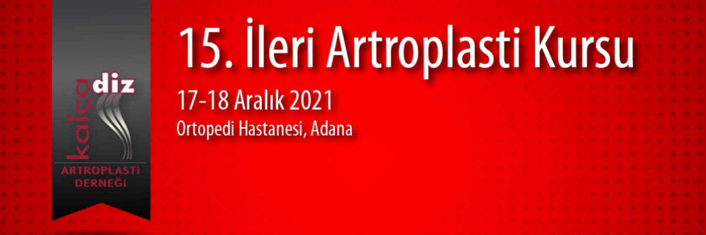

Değerli Meslektaşlarımız,
Bu kursta Kalça Diz Artroplasti Derneği tarafından her yıl düzenlenen artroplasti teorik kurslarında anlatılan bilgilerin pratik olarak uygulanması ve interaktif tartışılması planlanmaktadır. İleri kursun birinci gününde katılımcıların, primer kalça artroplastisinde planlama ve perioperatif zorlukları tüm yönleriyle öğrenmeleri, Primer zor kalça artroplastisi yapılan bir kalçada canlı ameliyat ile interaktif tartışmaları, revizyon öncesi planlama ve materyal hazırlığını tartışmaları, canlı ameliyat ile güvenli açılım ve komponent çıkarmayı, uzatılmış femoral osteotomiyi ve bu osteotomi ile revizyon ve spacer uygulamalarının ipuçlarını kavramaları hedeflenmektedir. Kursun ikinci gününde primer ve revizyon kalça artroplastisinin güncel konuları literatür ve video destekli olarak sunulacak ve canlı revizyon ameliyatı ile interaktif tartışma yapı lacaktır. Kurs ameliyathaneden naklen yayınlanacak olguların uygulanması öncesinde, esnasında ve sonrasında interaktif olarak sürecektir. Katılımcılar kendi aralarında, panelistlerle ve ameliyathane ekibiyle tartışma ve soru sorma fırsatı bulacaklardır.
Kayıt için tıklayınız,
Duyuru için tıklayınız,
Program için tıklayınız,
Kurs Başkanı: Prof. Dr. Emre Toğrul
Dernek Başkanı: Prof Dr Ertuğrul Şener
Saygılarımızla,
